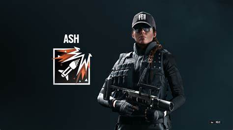
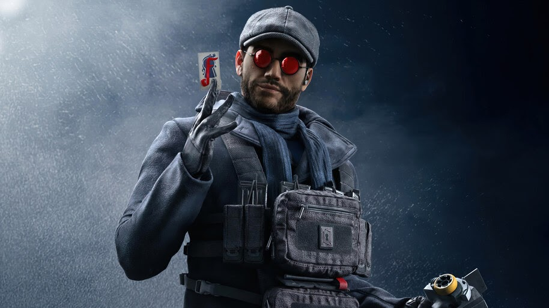
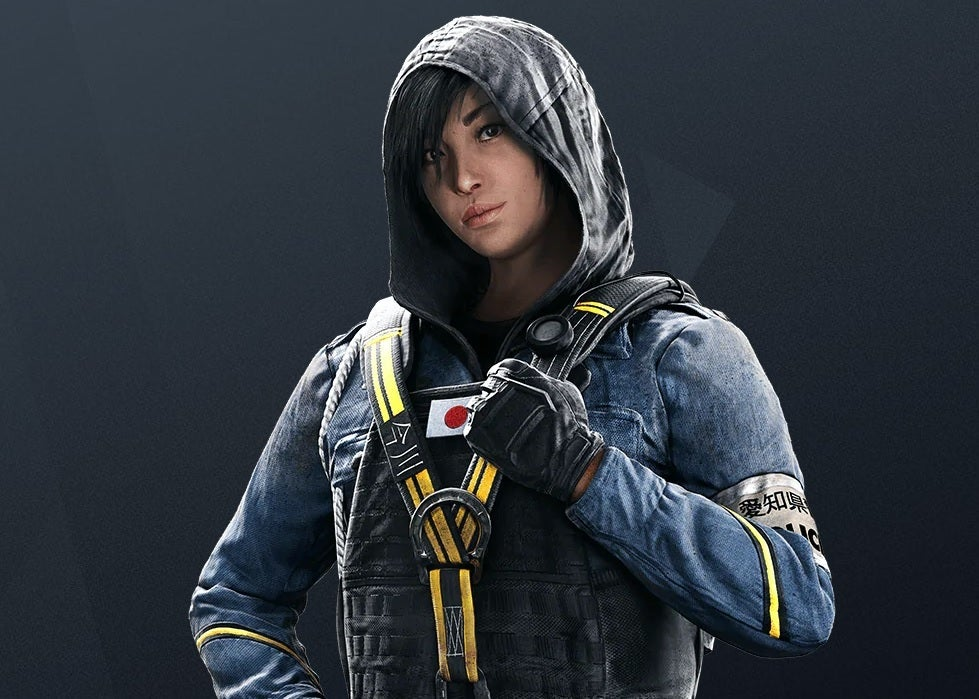
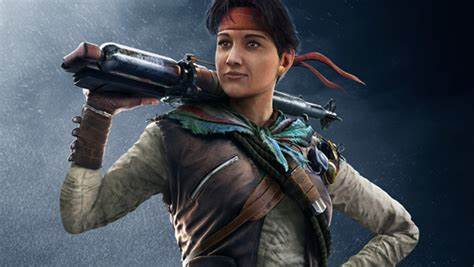
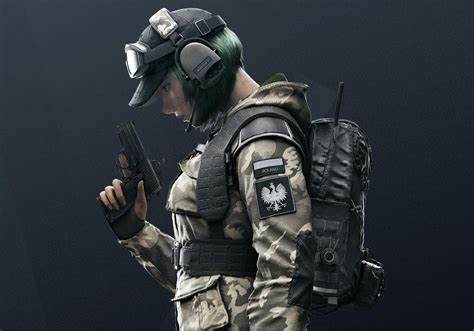
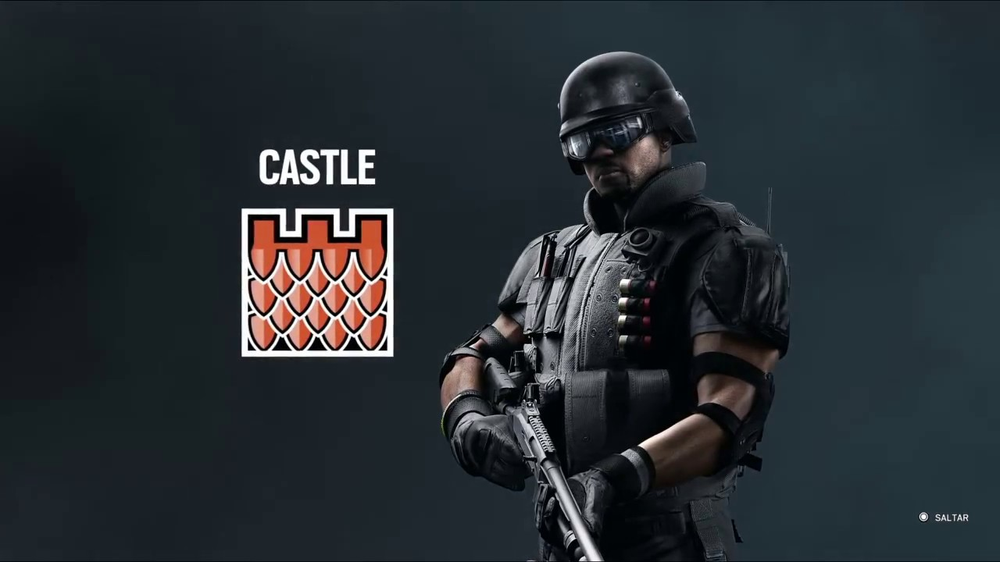
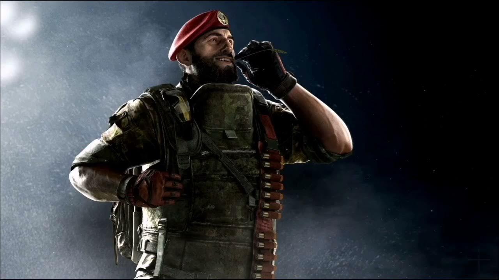
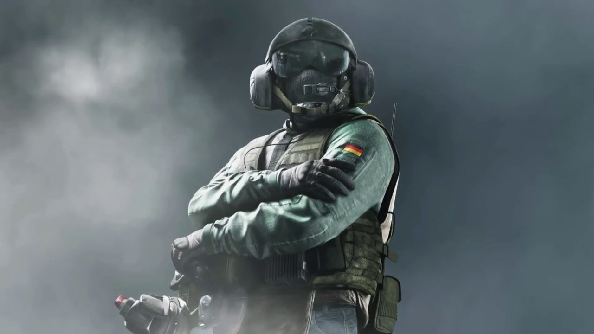
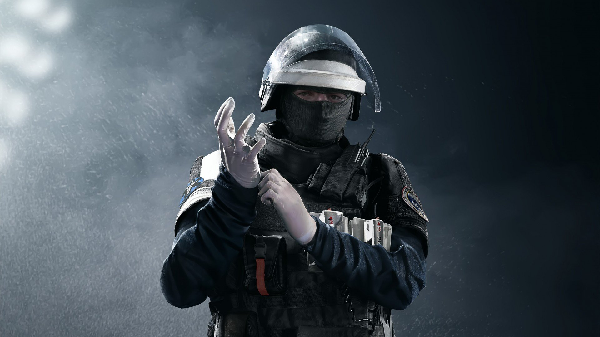

Atacantes

Ash
Ash es una agente veloz de primera línea, capaz de abrir brecha, flanquear y desviar la atención
de los defensores en cuestión de segundos. Ash puede realizar voladuras pequeñas a distancia,
gracias a sus proyectiles demoledores modificados M120 CREM.
Sledge
Sledge es un agente de demolición ligera y de flanqueo, que destaca por crear nuevas líneas de
disparo que presionan a los defensores. Sledge puede romper superficies no reforzadas usando su
martillo táctico de demolición, el Cáber.

Flores
Controlada a distancia, la carga CECR-Ratero avanza con rapidez mientras Flores explora un lugar
donde esta pueda detonar. Una vez activada, la Ratero se adhiere a la superficie más cercana, se
arma por sí sola con un caparazón antibalas, y estalla destruyendo dispositivos y superficies
blandas que se encuentran cerca.

Hibana
El X-KAIROS, un lanzador de proyectiles del calibre 40mm, dispara bolas explosivas que pueden
detonarse a distancia y simultáneamente. ¡Lleva a cabo asaltos innovadores creando nuevas líneas
de disparo o nuevos caminos!

Amaru
El gancho Garra es un artefacto verdaderamente único. Con él, Amaru puede agarrarse a cornisas y
ventanas para elevarla en tiempo récord. Sus rivales no solo tendrán que preocuparse por los
ataques que puedan venirles desde arriba, sino también de los que vienen desde abajo. Con la
Garra, Amaru es la única agente que puede subir a una trampilla abierta, en lugar de bajar por
ella. En el momento justo, enganchar la Garra en una ventana conlleva el terrible Golpe Garra,
que derriba al instante al rival que se encuentre debajo de la ventana.
Defensores

Ela 1
Inspiradas en las granadas polacas antitanques de 1939, usadas por los famosos Cichociemny durante
la IIGM, las minas adhesivas Grzmot pueden anclarse a superficies y, al estallar, bloquean el
oído y producen una acción desorientadora. Estas minas aturdidoras se activan por proximidad y
afectan a cualquiera en su radio.

Castle
Castle es un agente ancla y de protección de la zona, capaz de crear una fortaleza alrededor del
objetivo y de controlar el movimiento y dirección de los atacantes y de ralentizar su asalto. La
habilidad especial de Castle es crear barricadas reforzadas con su panel táctico universal UTP1
(Universal Tactical Panel).

Maestro
Maestro usa un dispositivo blindado de observación con control remoto que además dispara haces de
energía láser. Fijada a una pared o al suelo, la cámara del Mal de Ojo ofrece imagen remota para
controlar el movimiento en una zona. Cuando se abre la tapa protectora para permitir el disparo
del láser, el dispositivo queda expuesto, pero mientras se mantiene cerrada, ni las balas ni los
impactos directos provocan ningún daño. Por último, el Mal de Ojo permite ver a través de humo.

Jäger
Jäger puede ayudar a su equipo a crear una defensa férrea antes de recorrer el mapa para
interceptar a los atacantes que llegan por los flancos. Es capaz de destruir proyectiles
entrantes, gracias a su dispositivo ADS, el sistema de defensa activa.

Doc
Pistola de mano operada con un gatillo simple
Dosis de epinefrina de 1mg en una solución salina
La pistola utiliza un cartucho presurizado de C02
Sobrevivir así es más fácil